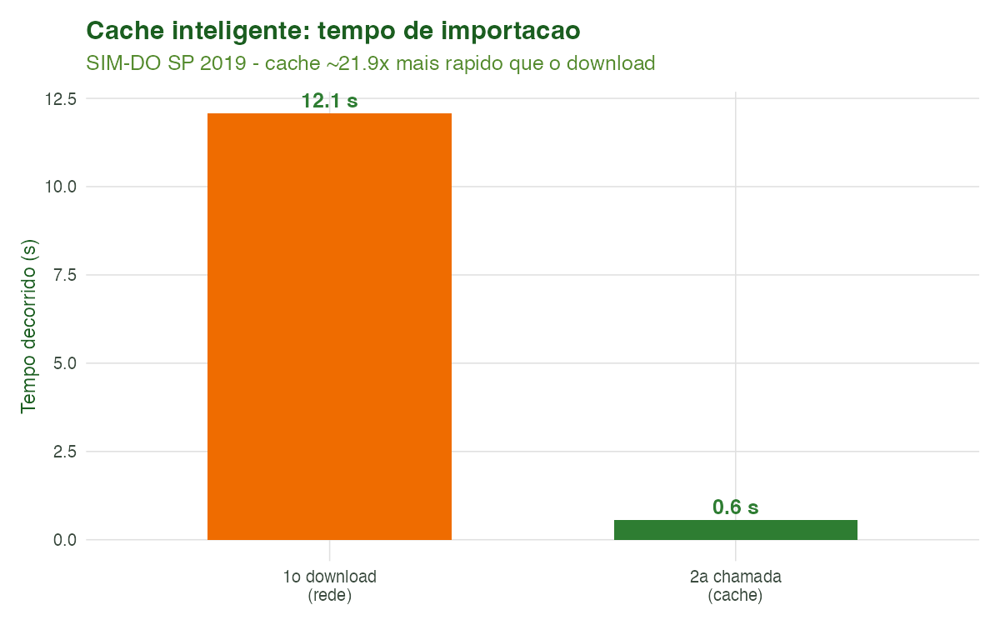
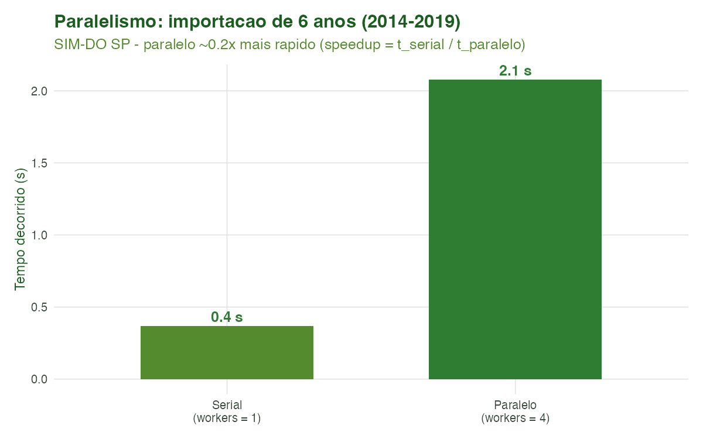
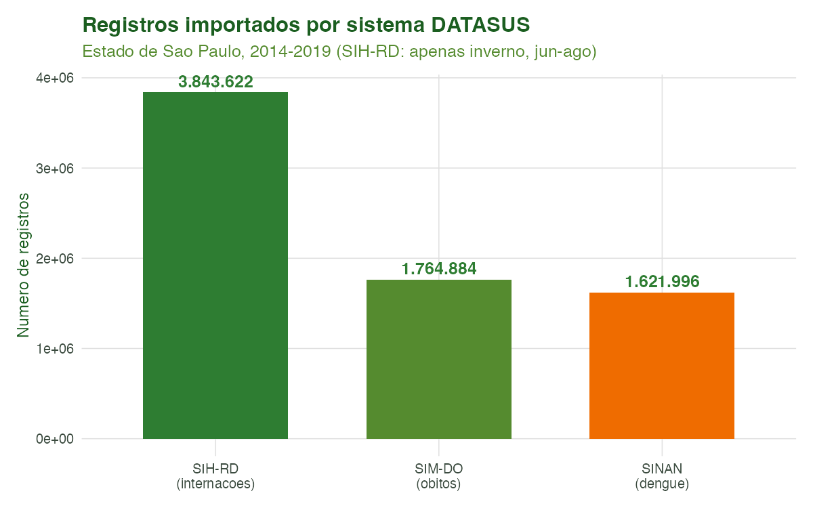
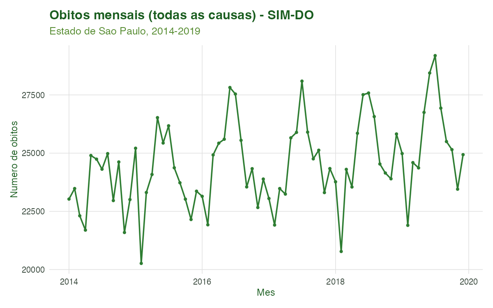

Tutorial 1: Importação de Dados do DATASUS
Equipe climasus4r
10/07/2026
Source:vignettes/01-importacao.Rmd
01-importacao.RmdObjetivo
Ao final deste tutorial você será capaz de importar
microdados dos Sistemas de Informação em Saúde do DATASUS com
uma única função — sus_data_import() — e de controlar seus
principais recursos: a escolha do sistema (SIM, SIH,
SINAN, SINASC, CNES, SIA) e seus subsistemas, o recorte
espacial (por UF, por região predefinida ou por município), a
diferença entre sistemas anuais e mensais, a escolha do
backend de processamento, e — fundamental para
trabalhos reprodutíveis e de grande volume — o cache
inteligente e o processamento paralelo.
A importação é a primeira etapa do pipeline do
climasus4r. Tudo o que vem depois (padronização, filtragem,
criação de variáveis, agregação, junção espacial, vínculo
socioeconômico, integração climática e modelagem) parte da base bruta
construída aqui.
Contexto científico
A pesquisa em clima e saúde no Brasil apoia-se nos Sistemas de Informação em Saúde (SIS) mantidos pelo Ministério da Saúde e disponibilizados pelo DATASUS. Cada sistema registra um tipo de evento, com cobertura nacional e granularidade municipal:
- SIM — Sistema de Informações sobre Mortalidade (declarações de óbito);
- SIH — Sistema de Informações Hospitalares (internações/AIH);
- SINAN — Sistema de Informação de Agravos de Notificação (doenças notificáveis, como dengue, zika e chikungunya);
- SINASC — Sistema de Informações sobre Nascidos Vivos;
- CNES — Cadastro Nacional de Estabelecimentos de Saúde;
- SIA — Sistema de Informações Ambulatoriais.
O acesso programático a esses arquivos .dbc é mediado
pelo pacote microdatasus (Saldanha, Bastos & Barcellos,
2019). O climasus4r encapsula esse acesso em
sus_data_import(), acrescentando cache
(para não rebaixar os mesmos dados a cada execução),
paralelismo (para acelerar downloads de muitas
UFs/anos) e mensagens multilíngues. Importar de forma reprodutível —
registrando sistema, ano e recorte espacial — é o que torna um estudo
auditável e replicável.
Caso condutor. Ao longo de toda a série de tutoriais investigamos a temperatura e os desfechos de saúde em idosos (60+) na Região Metropolitana de São Paulo, 2014–2019. Neste primeiro tutorial montamos a base bruta multi-sistema: óbitos (SIM-DO), internações (SIH-RD) e, como caso secundário de clima × arboviroses, dengue (SINAN-DENGUE). Os objetos importados aqui são salvos e servirão de entrada para o Tutorial 2 (Encoding e Padronização).
Dados utilizados
| Sistema | system = |
Periodicidade | Papel no caso |
|---|---|---|---|
| SIM-DO (óbitos) | "SIM-DO" |
Anual | Desfecho principal (mortalidade) |
| SIH-RD (internações) | "SIH-RD" |
Mensal (exige month) |
Morbidade hospitalar |
| SINAN-DENGUE | "SINAN-DENGUE" |
Anual | Caso secundário (clima × dengue) |
Recorte espacial: estado de São Paulo
(uf = "SP"), 2014–2019. Todos os dados são públicos
e reais, obtidos do DATASUS via microdatasus.
Pipeline completo
Os blocos abaixo reproduzem o que o script
scripts/tutorial_01_importacao.R executa. Comece carregando
o pacote:
library(climasus4r)Importar um sistema anual (SIM-DO)
O SIM é anual: o argumento month é
ignorado. Pedimos os seis anos de uma vez e deixamos o cache e o
paralelismo ligados.
obitos <- sus_data_import(
uf = "SP",
year = 2014:2019,
system = "SIM-DO",
backend = "arrow", # "arrow" (lazy, padrão) ou "tibble" (em memória)
use_cache = TRUE, # reaproveita downloads anteriores
parallel = TRUE, # baixa anos em paralelo
workers = 4,
lang = "pt"
)Visualizar dados
dplyr::glimpse(obitos)Importar um sistema mensal (SIH-RD)
O SIH é mensal: o argumento month é
obrigatório. Aqui pedimos apenas os meses de inverno
(junho a agosto), quando a mortalidade respiratória de idosos tende a
ser mais alta.
internacoes <- sus_data_import(
uf = "SP",
year = 2014:2019,
month = 6:8, # obrigatório para SIH, CNES e SIA
system = "SIH-RD",
use_cache = TRUE,
parallel = TRUE,
workers = 4,
lang = "pt"
)Visualizar dados
dplyr::glimpse(internacoes)Importar notificações (SINAN-DENGUE)
dengue <- sus_data_import(
uf = "SP",
year = 2014:2019,
system = "SINAN-DENGUE",
use_cache = TRUE,
lang = "pt"
)Visualizar dados
dplyr::glimpse(dengue)Recorte espacial: por região ou por município
Em vez de listar UFs, você pode usar um grupo
predefinido em region (macrorregiões, biomas ou
bacias) — útil para estudos regionais:
# Toda a macrorregião Sudeste (ES, MG, RJ, SP) de uma vez:
obitos_sudeste <- sus_data_import(
region = "sudeste",
year = 2019,
system = "SIM-DO",
lang = "pt"
)Visualizar dados
dplyr::glimpse(obitos_sudeste)Ou restringir a um município por código IBGE (ou
nome em city). O filtro é resolvido para o código IBGE
antes do download:
# Apenas o município de São Paulo (código IBGE 3550308):
obitos_muni_sp <- sus_data_import(
uf = "SP",
year = 2014:2019,
system = "SIM-DO",
municipality_code = "3550308",
lang = "pt"
)Visualizar dados
dplyr::glimpse(obitos_muni_sp)(Opcional) Reler dados já exportados
Depois de exportar a base (com sus_data_export()), você
pode relê-la em sessões futuras sem baixar de novo, com
sus_data_read() — que detecta o formato
automaticamente:
obitos <- sus_data_read("output/sim_sp_2014_2019.parquet")Ao final desta etapa temos obitos,
internacoes e dengue — a base bruta
multi-sistema que alimentará os próximos tutoriais.
Características das funções
sus_data_import()
A única porta de entrada da etapa de importação. Encapsula
microdatasus::fetch_datasus (Saldanha, Bastos &
Barcellos, 2019) com cache e paralelismo.
| Argumento | Essencial? | Descrição |
|---|---|---|
uf / region
|
sim (um deles) | UF(s) ("SP", c("SP","RJ"),
"all") ou grupo predefinido
("sudeste", "amazonia_legal", …) |
year |
sim | Ano(s) com 4 dígitos (ex.: 2014:2019) |
system |
sim | Sistema/subsistema (ver tabela de sistemas abaixo) |
month |
só mensais | Mês(es) 1–12; obrigatório para SIH, CNES e SIA; ignorado em SIM, SINAN e SINASC |
backend |
opcional |
"arrow" (lazy, padrão, muito rápido) ou
"tibble" (em memória) |
city / municipality_code
|
opcional | Restringe a municípios (nome ou código IBGE de 6/7 dígitos) |
use_cache |
recomendado |
TRUE reaproveita downloads; cache_dir
define a pasta |
force_redownload |
opcional |
TRUE ignora o cache e rebaixa tudo |
parallel / workers
|
opcional | Paraleliza combinações UF/ano; respeita o
future::plan() do usuário |
lang / verbose
|
opcional | Idioma ("pt", "en", "es") e
nível de mensagens |
Retorno: um
tibble/data.frame (ou objeto Arrow, se
backend = "arrow") com as variáveis originais do sistema,
mais source_system e download_timestamp, datas
como objetos Date e texto em UTF-8.
Cache inteligente. As chamadas são identificadas por
uma chave SHA-256 dos parâmetros (UF, ano, mês,
sistema). Os resultados ficam em cache_dir
(~/.climasus4r_cache/data por padrão) como RDS comprimido e
são reaproveitados automaticamente. O cache expira em ~30 dias para
sistemas dinâmicos (CNES, SIA, SIH) e ~365 dias para os
estáticos (SIM, SINAN, SINASC).
sus_data_read()
Relê arquivos já exportados, sem voltar à fonte. Autodetecta o formato.
| Argumento | Descrição |
|---|---|
path |
Caminho de um arquivo, vetor de arquivos, ou uma pasta |
format |
NULL (autodetecta) ou "parquet",
"csv", "dbc", "rds",
"shapefile", … |
parallel / workers
|
Leitura paralela de muitos arquivos |
read_metadata |
Recupera metadados companheiros como atributos |
Retorno: a tabela lida (ou objeto sf,
para dados espaciais); leituras em lote são combinadas com
dplyr::bind_rows().
Sistemas e subsistemas suportados
| Sistema | Descricao | Exemplos_system | Periodicidade |
|---|---|---|---|
| SIM | Mortalidade (declaracoes de obito) | SIM-DO, SIM-DOFET, SIM-DOINF, SIM-DOMAT, SIM-DOEXT | Anual (month ignorado) |
| SIH | Internacoes hospitalares (AIH) | SIH-RD, SIH-RJ, SIH-SP, SIH-ER | Mensal (exige month) |
| SINASC | Nascidos vivos | SINASC | Anual (month ignorado) |
| SINAN | Agravos de notificacao (doencas notificaveis) | SINAN-DENGUE, SINAN-ZIKA, SINAN-CHIKUNGUNYA, SINAN-MALARIA, … | Anual (month ignorado) |
| CNES | Estabelecimentos de saude | CNES-LT, CNES-ST, CNES-EQ, CNES-PF, … | Mensal (exige month) |
| SIA | Atendimentos ambulatoriais | SIA-PA, SIA-AB, SIA-AD, … | Mensal (exige month) |
Atalhos de region (baixam várias UFs de uma vez):
| Grupo | Tipo | UFs |
|---|---|---|
| sudeste | Macrorregiao IBGE | ES, MG, RJ, SP |
| sul | Macrorregiao IBGE | PR, RS, SC |
| nordeste | Macrorregiao IBGE | AL, BA, CE, MA, PB, PE, PI, RN, SE |
| norte | Macrorregiao IBGE | AC, AP, AM, PA, RO, RR, TO |
| centro_oeste | Macrorregiao IBGE | DF, GO, MT, MS |
| amazonia_legal | Bioma/fronteira ecologica | AC, AP, AM, PA, RO, RR, MT, MA, TO |
| mata_atlantica | Bioma | AL, BA, CE, ES, GO, MA, MG, MS, PB, PE, PI, PR, RJ, RN, RS, SC, SE, SP |
| cerrado | Bioma | BA, DF, GO, MA, MG, MS, MT, PA, PI, PR, RO, SP, TO |
| bacia_sao_francisco | Bacia hidrografica | AL, BA, DF, GO, MG, PE, SE |
| semi_arido | Recorte climatico | AL, BA, CE, MA, PB, PE, PI, RN, SE, MG |
Estrutura típica do SIM-DO logo após a importação (causa básica em
CAUSABAS, idade codificada em IDADE, município
de residência em CODMUNRES):
| DTOBITO | DTNASC | SEXO | IDADE | RACACOR | CAUSABAS | CODMUNRES | CODMUNOCOR |
|---|---|---|---|---|---|---|---|
| 08072017 | 17071962 | 2 | 454 | 1 | C383 | 352230 | 352230 |
| 13062017 | 02091986 | 2 | 430 | 4 | C099 | 353870 | 353870 |
| 05072017 | 14051971 | 2 | 446 | 4 | C710 | 351170 | 353870 |
| 23062017 | 24081940 | 1 | 476 | 4 | R960 | 351030 | 351030 |
| 07062017 | 21041928 | 1 | 489 | 1 | R960 | 351030 | 351030 |
| 13052017 | 04091945 | 1 | 471 | 1 | I119 | 351030 | 351030 |
| 28052017 | 02031949 | 2 | 468 | 4 | I110 | 351030 | 351030 |
| 24062017 | 03101950 | 2 | 466 | 1 | I120 | 351030 | 351030 |
| 13032017 | 28051917 | 2 | 499 | 1 | I500 | 351040 | 351040 |
| 13032017 | 01031953 | 2 | 464 | 1 | C538 | 351040 | 351040 |
Desempenho: cache e paralelismo
Dois recursos de sus_data_import() tornam a importação
reprodutível e rápida. O ganho relativo (speedup) é a
razão entre o tempo sem o recurso e o tempo com ele:
Valores de speedup acima de 1 indicam aceleração. As figuras abaixo trazem medições reais feitas pelo script de geração.

Figura 1. Benchmark de cache. A primeira chamada baixa os dados da rede; a segunda lê do cache local, tipicamente ordens de grandeza mais rápida — sem qualquer mudança no código de análise.

Figura 2. Benchmark de paralelismo. Importar os seis
anos com workers = 4 é mais rápido do que em série
(workers = 1). O ganho depende do número de núcleos
disponíveis; sus_data_import() avisa se
workers exceder os núcleos da máquina.
Resultados ilustrados

Figura 3. Número de registros importados por sistema para São Paulo, 2014–2019 (o SIH-RD foi restrito ao inverno, junho–agosto, para manter o exemplo leve). A ordem de grandeza muito diferente entre sistemas ajuda a dimensionar memória e tempo de download.

Figura 4. Série mensal de óbitos (todas as causas) do SIM-DO em São Paulo, 2014–2019. A sazonalidade de inverno já é visível na base bruta e será o ponto de partida para os recortes (idosos, causas respiratórias) dos próximos tutoriais.
Referências
- Saldanha, R. de F., Bastos, R. R., & Barcellos, C. (2019). Microdatasus: pacote para download e pré-processamento de microdados do Departamento de Informática do SUS (DATASUS). Cadernos de Saúde Pública, 35(9), e00032419.
- Ministério da Saúde (Brasil). DATASUS — Departamento de Informática do SUS. Disponível em: http://datasus.saude.gov.br.